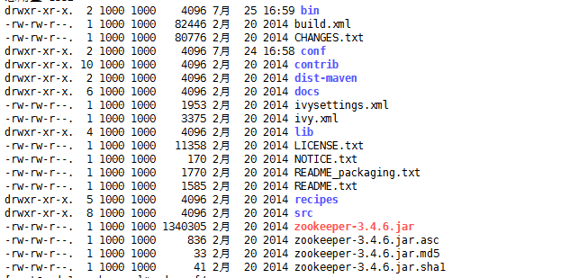
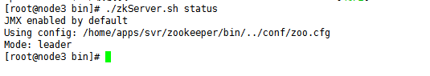
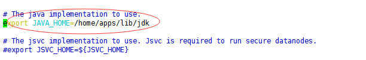
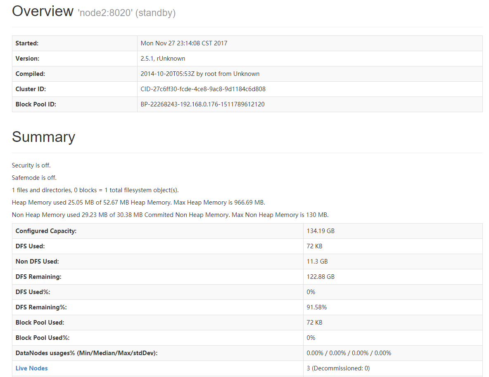
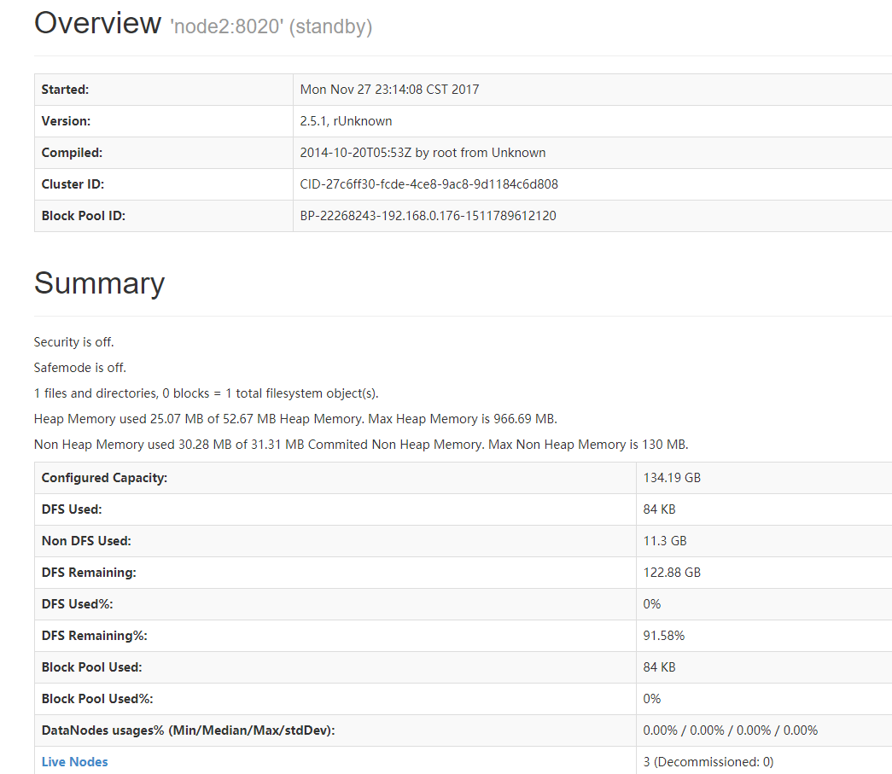
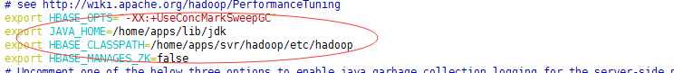
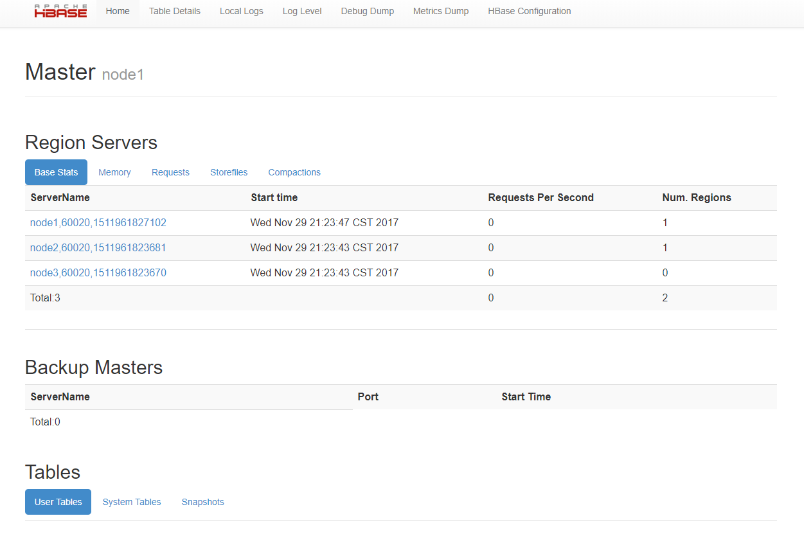

概述。
因为公司项目数据量相对较大，所以需要利用hbase进行存储，前几个月有进行Hadoop+Hbase的高可用搭建。但是因为通讯那边需要写比较多的功能，后来又跑去负责netty相关的通讯模块。这几周重新搭建这个集群，发现还是记不起很多细节和步骤。俗话说的好，好记性不如烂笔头。不如就利用空余时间把重要的步骤都记录下来。
环境描述。
技术博客的话，很多人都不愿意说明白资源环境，很容易让人看得一头雾水。由于这次试验的目的是将高可用的环境搭建起来，我利用VBOX 虚拟了三个独立虚拟主机，配置都不高，都是1G内存+100G硬盘。下面用一个简单的列表说明:
| name | ip | memory |
|---|---|---|
| node1 | 192.168.0.176 | 1g |
| node2 | 192.168.0.177 | 1g |
| node3 | 192.168.0.178 | 1g |
其中node1,node2 为namenode。node1,node2,node3 同时为datanode。
接下来是说一下我们用的Hadoop 版本和 Habse 版本，我们用的Hadoop 版本是2.5.1，用的hbase版本是0.98，zookeeper 则是3.4.6
准备
我们这篇文章的主要重点还是讲一下Hadoop 和 Hbase 的搭建与启动。前期的准备可能讲的不是那么细节。
配置host
使用命令 vim /etc/hosts 编辑host文件，添加如下内容:
192.168.0.176 node1
192.168.0.177 node2
192.168.0.178 node3
写完之后进行保存，并同步到其他两台机器中，或者在另外两台机器上进行相同的编辑。
配置免登陆
因为搭建的是集群分布，所以各个节点之间要进行通讯，为了避免每次启动节点需要输入密码，所以要配置免登陆。配置免登陆的做法也相对简单，就是每台机器都生成rsa 或者 dsa 私钥和公钥，然后将这台机器的公钥拷贝到其他机器中，并加入到认证列表 authorized_keys 中。我们来讲一下具体的做法,以node1 为例:
- 1）首先进入目录:
cd ~/.ssh - 2）利用命令
ssh-keygen在每台机子上生成公钥和私钥:ssh-keygen -t dsa（这里我使用dsa加密方式） - 3）将node2 node3 的id_dsa.pub 公钥拷贝到node1。
scp ~/.ssh/id_dsa.pub root@node1:~/.ssh/id_dsa.pub.node2,scp ~/.ssh/id_dsa.pub root@node1:~/.ssh/id_dsa.pub.node3
这样我们就能在node1 的.ssh 将三个公钥文件都加入 authorized_keys，若无authorized_keys 文件，则手动创建。 - 4) 利用 cat 命令将三个文件追加到 authorized_keys。这里我只写一个例子:
cat ./id_dsa.pub.node2 >> authorized_keys。
至此。这样node2和node3 登录node1的话 不用密码便可以登录了。
配置zookeeper
zookeeper 概述
zookeeper 是一款分布式协调服务，在诸多分布式系统中扮演重要的协调角色。主要作用有：命名服务, 分布式锁, 订阅/发布服务,均衡负载 等作用。zookeeper 在Hadoop 中的作用主要是NameNode与ResourceManager的主备切换。而在Hbase 同样是主要用于HMaster的选举以及 Region 的状态管理。
配置分布式zookeeper 集群。
因为zookeeper 在Hadoop 和 Hbase 中都显得很重要，所以zookeeper 自身的稳定性与容灾能力都很重要，很有必要配置分布式集群。一个集群中只有一个 Master, 其余都是 follower 或者Observer。话不多说我们开始配置。
- 下载就不用多说了吧，这里我们利用wget 命令进行下载，并将它放在 /home/apps/svr 目录中:
wget -P /home/apps/svr https://mirrors.tuna.tsinghua.edu.cn/apache/zookeeper/zookeeper-3.4.6/zookeeper-3.4.6.tar.gz - 利用 tar 命令进行解压 :
tar -xvf /home/apps/svr/zookeeper-3.4.6.tar.gz. 建立软连接 ln -s zookeeper-3.4.6 zookeeper 进入 /home/apps/svr/zookeeper 目录中。查看目录文件,如下:
我们只要关注 bin 文件夹 以及 conf 文件夹，我们先进入conf 文件夹 ，编辑 zoo.cfg 文件，配置如下:
1
2
3
4
5
6
7
8
9
10
11
12
13
14
15
16
17
18
19
20
21
22
23
24
25
26
27
28
29
30
31
32# The number of milliseconds of each tick
tickTime=2000
# The number of ticks that the initial
# synchronization phase can take
initLimit=10
# The number of ticks that can pass between
# sending a request and getting an acknowledgement
syncLimit=5
# the directory where the snapshot is stored.
# do not use /tmp for storage, /tmp here is just
# example sakes.
dataDir=/home/apps/data/zookeeper
# the port at which the clients will connect
clientPort=2181
# the maximum number of client connections.
# increase this if you need to handle more clients
#maxClientCnxns=60
#
# Be sure to read the maintenance section of the
# administrator guide before turning on autopurge.
#
# http://zookeeper.apache.org/doc/current/zookeeperAdmin.html#sc_maintenance
#
# The number of snapshots to retain in dataDir
#autopurge.snapRetainCount=3
# Purge task interval in hours
# Set to "0" to disable auto purge feature
#autopurge.purgeInterval=1
server.1=node1:2888:3888
server.2=node2:2888:3888
server.3=node3:2888:3888其中 端口2181 为为Client 提供服务的端口，而2888 为leader监听follower的端口，3888则为 选举leader 角色的端口。接下来因为集群中的每个zookeeper 要依赖于myid 来标识自己，所以需要在zookeeper的存放数据的文件夹下,也就是上图 配置中 dataDir 所指向的目录中创建myid 文件，这里我们node1 的myid 写1 ,node2 写2, node 3就写3 好了。
接下来我们来开始启动zookeeper。进入zookeeper 安装目录下的/bin 目录,使用
./zkServer.sh start, node2, node3 也是如此:我们可以使用
./zkServer.sh status命令来查看状态的启动后的角色，前面我们已经说到了，一个集群内只有一个 Master，其他正常来说应该都是 follower。但是我们可能会遇到上面的错误，这是因为node1 node2 node3 机器之间存在防火墙，我们可以将zookeeper 的三个端口都打开，或者更简单一点我们直接想关掉防火墙。
service iptables stop。我们再来看看 zookeeper 的状态。至此，会看到有一台为master,其他两台为follower，zookeeper 搭建完成。

搭建Hadoop 集群。
上面已经准备好， 现在我们就开始这篇文章的重头戏。其实搭建Hadoop也不算什么复杂的事情，只是很容易掉坑里。我们这里使用的Hadoop是 2.5.1。
Hadoop概述
Hadoop 并不是单指一个框架工具，而是是一个开源的生态系统，是一个分布式运行系统，基于java 开发。成员包括: HDFS, HBase, MapReduce, Hive 等等。
其中我们需要着重了解的是HDFS 和 Hbase。这里我们先讲HDFS。HDFS的设计思想来源于谷歌的GFS(Google File System), 是一款分布式文件系统框架。他的特点是:
- 保存多个副本(默认是三个)，当某个数据副本不可用，可以使用其余的副本继续提供数据服务。而且副本有容灾能力，可以自动恢复。
- HDFS默认会将文件分割成block，64M为1个block。但是如果小文件太多，那内存的负担会很重
HDFS 采用Master-Slave 架构， 角色有 NameNode, SecondaryNameNode, DataNode。其中，NameNode 类似一个大领导，管理元数据与分配策略，处理客户端的请求; SecondaryNameNode
就是 NameNode 的左右手，是NameNode的冷备份。而DataNode 则是小弟，负责读写客户需要的数据。如下图:
Hadoop 高可用集群搭建
我们下载好hadoop 之后，解压在/home/apps/svr 中，并像上面一样建立软连接。也就是说现在hadoop的安装目录我这次安装在 /home/apps/svr/hadoop。这里我们暂时先只是将hadoop简单的配置起来，所以只要关注
core-site.xml , hdfs-site.xml slave配置。我们先进入hadoop 的配置文件目录
cd /home/apps/svr/hadoop/etc/hadoop/,我们先配置hadoop-env.sh 的JDK 路径先配置好.因为如果使用hadoop默认的环境变量 JAVA_HOME 可能会出现很多问题。所以我们还是需要配置一下
配置core-site.xml
1
2
3
4
5
6
7
8
9
10
11
12
13
14
15
16
17
18
19
20
21
22
23
24
25<configuration>
<property>
<name>fs.defaultFS</name>
<value>hdfs://tdtest</value>
<description>定义默认的文件系统主机和端口,默认端口是9000</description>
</property>
<property>
<name>dfs.journalnode.edits.dir</name>
<value>/home/apps/data/journal</value>
<description>定义edit 文件存放目录</description>
</property>
<property>
<name>ha.zookeeper.quorum</name>
<value>node1:2181,node2:2181,node3:2181</value>
<description>定义zookeeper 集群</description>
</property>
<property>
<name>hadoop.tmp.dir</name>
<value>/home/apps/data/hadoop</value>
<description>定义hadoop 临时文件夹</description>
</property>
</configuration>配置hdfs-site.xml
1
2
3
4
5
6
7
8
9
10
11
12
13
14
15
16
17
18
19
20
21
22
23
24
25
26
27
28
29
30
31
32
33
34
35
36
37
38
39
40
41
42
43
44
45
46
47
48
49
50
51
52
53
54
55
56
57
58
59
60
61
62
63
64
65
66
67<configuration>
<property>
<name>dfs.nameservices</name>
<value>tdtest</value>
<description>定义空间的逻辑名称 </description>
</property>
<property>
<name>dfs.ha.namenodes.tdtest</name>
<value>nn1,nn2</value>
<description>定义集群中所有namenode的名称 </description>
</property>
<property>
<name>dfs.namenode.rpc-address.tdtest.nn1</name>
<value>node1:8020</value>
<description>定义namenode nn1的rpc地址</description>
</property>
<property>
<name>dfs.namenode.rpc-address.tdtest.nn2</name>
<value>node2:8020</value>
<description>定义namenode nn2的rpc地址</description>
</property> </property>
<name>dfs.namenode.http-address.tdtest.nn1</name>
<value>node1:50070</value>
<description>定义namenode nn1的http地址</description>
</property>
<property>
<name>dfs.namenode.http-address.tdtest.nn2</name>
<value>node2:50070</value>
<description>定义namenode nn2的http 地址</description>
</property>
<property>
<name>dfs.namenode.shared.edits.dir</name>
<value>qjournal://node1:8485;node2:8485;node3:8485/tdtest</value>
<description>定义namenode 读取edits文件的地址</description>
</property>
<property>
<name>dfs.client.failover.proxy.provider.tdtest</name>
<value>org.apache.hadoop.hdfs.server.namenode.ha.ConfiguredFailoverProxyProvider</value>
<description>配置HDFS连接一个activce namenode的java类</description>
</property>
<property>
<name>dfs.ha.fencing.methods</name>
<value>sshfence</value>
<description>定义联通各个节点的方式，这里是ssh的方式</description>
</property>
<property>
<name>dfs.ha.fencing.ssh.private-key-files</name>
<value>/root/.ssh/id_dsa</value>
<description>定义ssh的私钥地址</description>
</property>
<property>
<name>dfs.ha.automatic-failover.enabled</name>
<value>true</value>
<description>是否支持自动修复</description>
</property>
</configuration>配置slave 配置
1
2
3node1
node2
node3
在node1 配置好之后，同步到其他两台机子上。接下来我们来试着启动一下。
- 首次启动
- 进入/home/apps/svr/hadoop/sbin/,我们可以分别在三台机子上使用
./hadoop-daemon.sh start journalnode启动journalnode。 - 在node1 上使用命令
hdfs namenode -format格式化namenode (这是首次启动必须做的)。 然后在node1上使用./hadoop-daemon.sh start namenode启动node1 上的namenode。 - 然后在我们将node1 的namenode 同步到node2， 这里我们使用
hdfs namenode -bootstrapStandby同步。这个步骤是首次启动必须的。 - 接下来我们在一台机子上(这里我们是选择在node1上)，使用
hdfs zkfc -formatZK进行 主备切换机制的格式化，这个也是首次启动所必须的。 - 最后我们先使用
./stop-dfs.sh关闭所有hadoop相关的进程， 再利用./start-dfs.sh启动所有组件(这里不包括yarn 等组件)。我们来看一下效果:
输入 http://192.168.0.176:50070 查看节点状态:

这里我们可以看见这个节点是active。我们再来看看另外一个节点：http://192.168.0.177:50070

如果成功的话，这里不出意外状态是 standby.
- 进入/home/apps/svr/hadoop/sbin/,我们可以分别在三台机子上使用
- 非首次启动:如果不是首次启动的话，则直接可以使用
./start-dfs.sh启动相关组件，不用再次格式化namenode,zkfc等。
Hadoop 搭建总结
至此我们已经完成了hadoop 高可用的简单搭建，涉及到的参数配置也相对简单，还有许多配置值得我们去研究。接下来我们讲hbase的高可用集群配置。
搭建Hbase 集群
Hbase简介
Hbase是一个高可靠性、高性能、面向列、可伸缩的分布式存储系统。我们来看一下Hbase 与Hadoop 配合的架构图:
为什么说Hbase 是基于列式存储的呢，我们来看一张Hbase 的逻辑视图便于我们的了解:
- RowKey:行键，Table的主键，Table中的记录按照Row Key排序。
- Timestamp: 时间戳，每次数据操作对应的时间戳，可以看作是数据的版本号。
- Column Family：列簇，Table在水平方向有一个或者多个Column Family组成，一个Column Family中可以由任意多个Column组成。
相对于Hadoop 集群来说，Hbase 搭建相对简单。我们在这里省略Hbase的下载与安装，把焦点放在hbase的核心配置:在hbase的目录下我们进入 conf 文件夹。可以看见hbase-site.xml配置文件和环境配置 hbase-env.sh 以及 regionservers
hbase-site.xml 配置
1 | <configuration> |
hbase-env.sh 环境配置
我们还需要配置一下hbase的运行环境, vim hbase-env.sh:

如图，我们需要配置jdk, hadoop 的环境，还有不使用hbase自带的zookeeper ，这个比较重要。
regionservers 配置
1 | ode1 |
启动hbase 服务
接下来我们进入 /bin 目录，启动hbase。 使用命令 ./start-hbase.sh。
启动完之后，输入 http://192.168.0.176:60010 地址，查看hbase 的启动状态:

如图所示，我们可以看见hbase 的节点状态。至此，hbase 的搭建就算完成了。
总结
在这篇文章中，我们从零到一完成了简单的 Hadoop+Hbase+Zookeeper 的高可用搭建，当然hadoop 和 hbase 的应用远不止于此。我们要多实践它的更多用途，后面我们会结合Java客户端，与hadoop的CDH版本等多讲讲它的生态圈以及实际应用。